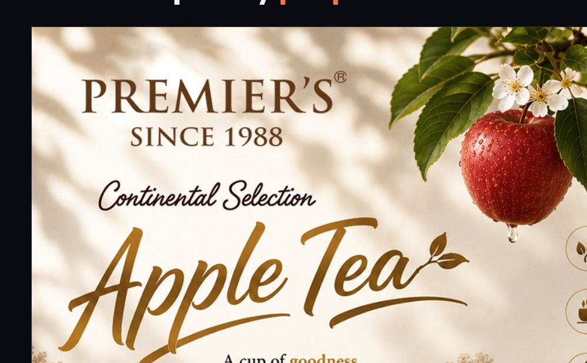

Website Design & Development
Responsive website layouts, front-end implementation, CMS websites and ongoing improvements.
↗HELLO, I’M
Graphic Designer | Web Developer | Digital Creative
I’m a creative Graphic and Web Designer with 3–4 years of professional experience across website design, front-end development, UI/UX and digital media. I bring design and technology together to create responsive, intuitive and engaging digital experiences.
I’ve led a team of 5–6 designers and worked across projects for 15+ companies, with a focus on thoughtful execution, brand consistency and reliable delivery.
A LITTLE INTRODUCTION
I create digital experiences that look considered, work smoothly and communicate clearly.
My work spans visual design, website development, front-end implementation and digital communication. I enjoy understanding a brief, shaping a clear visual direction and carrying the work through to delivery.
Alongside hands-on design and development, I bring experience coordinating designers, communicating with clients and managing multiple website and marketing projects.
View my résumé ↗WHAT I DO
A blend of creative direction, design craft and technical implementation—focused on making digital work effective.
Responsive website layouts, front-end implementation, CMS websites and ongoing improvements.
↗Clear visual hierarchy, user-focused layouts and consistent digital experiences.
↗Logo concepts, promotional creatives, banners, posters and brand communication assets.
↗WordPress website creation, content updates, troubleshooting and website maintenance.
↗SEO support, campaign creatives, digital advertising and promotional execution.
↗Team guidance, client communication, project coordination and delivery management.
↗TOOLS OF THE TRADE
Technologies and applications used across design, development and productivity workflows.
SELECTED WORK & CAPABILITIES
A selection of creative and digital work areas represented in my experience.

Responsive layouts, front-end development and CMS-based websites.
Logo design, promotional graphics and consistent brand visuals.
Campaign execution, social media designs, advertisements and posters.
Selected examples and service areas. More project details can be added as you publish approved work samples.
THE JOURNEY SO FAR
Professional experience across web design, project coordination and business operations.
ACADEMIC BACKGROUND
HAVE A PROJECT IN MIND?
Have a website, design or digital project to discuss? I’d be glad to hear about it.